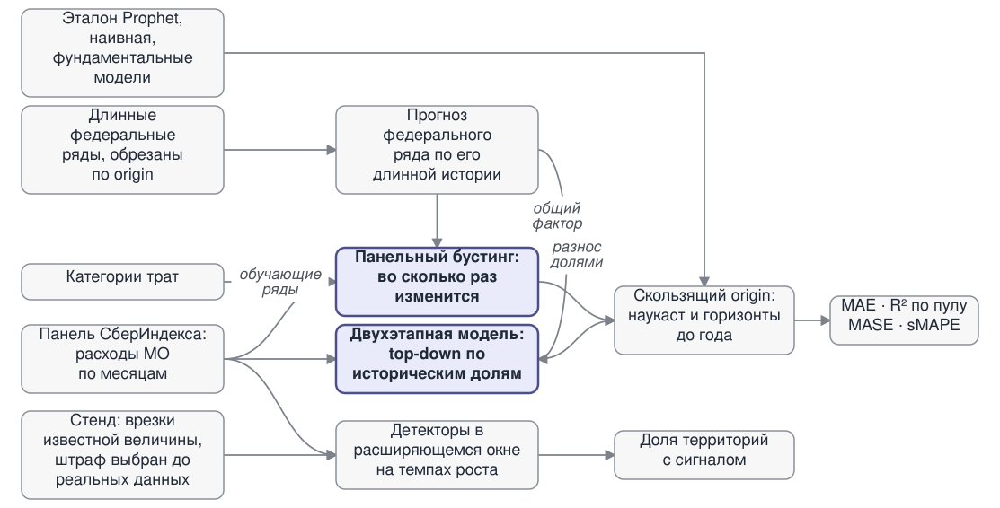

Конкурс СберИндекса · направление «Прогнозирование»
Прогнозирование потребительских расходов муниципальных образований
Мы прогнозируем потребительские расходы 2 028 муниципальных образований России помесячно на горизонтах от наукаста до года вперёд и ищем в них точки структурных изменений.
Задача только выглядит как прогноз каждого муниципалитета по отдельности: на деле это прогноз одного числа по стране и разнос его по территориям.
-
−23,0%
точнее эталона конкурса (Prophet) на горизонте 3 мес.: 1 581 ₽ → 1 217 ₽ на человека в месяц, R² пул 0,961 → 0,978
Но выигрыш держится на 2 фолдах из 3: на первом, с самой короткой историей, эталон точнее.
-
45,9%
точнее эталона на наукасте: 839 против 1 550 ₽
-
40%
точнее эталона на год вперёд (к наивной — 39%)
На год вперёд, где панельным моделям не на чем учиться, лучшая — двухэтапная: точнее наивной и эталона на 39% и 40%, но это один фолд.
-
3,8–4,5%
средняя ошибка первого этапа двухэтапной модели на факте 2025 года (горизонты 1–12 мес.), против 7,0–17,1% у простых правил
Первый этап двухэтапной модели — прогноз федерального ряда от декабря 2024 — ошибается в среднем на 3,8–4,5% (горизонты 1–12 мес.) против 7,0–17,1% у правил «как в декабре» и «как год назад».
-
2 028 рядов × 24 месяца
панель СберИндекса, январь 2023 — декабрь 2024, без длинных пропусков
Метод на одной странице
